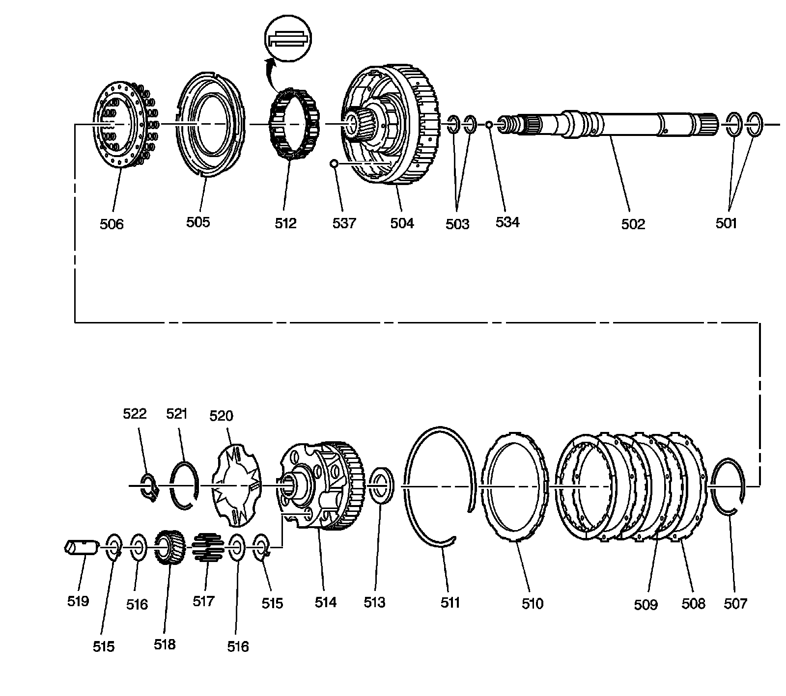
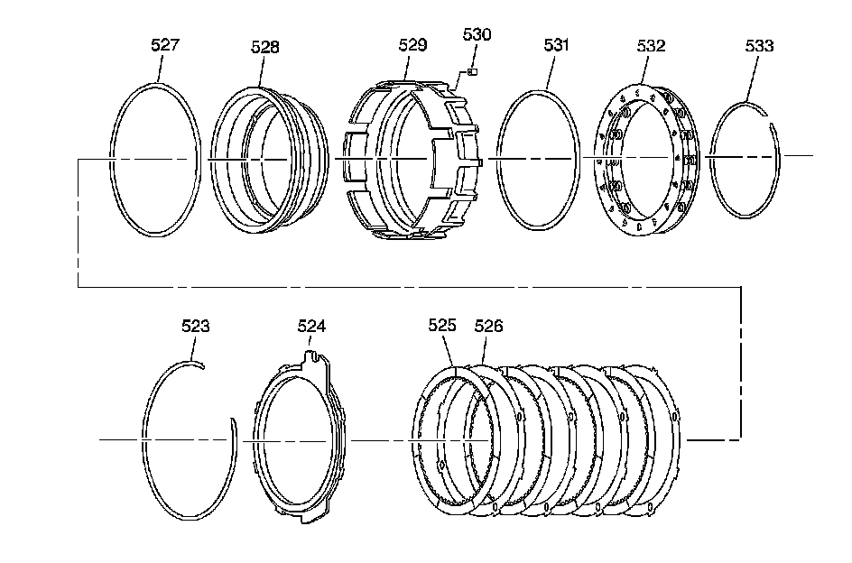
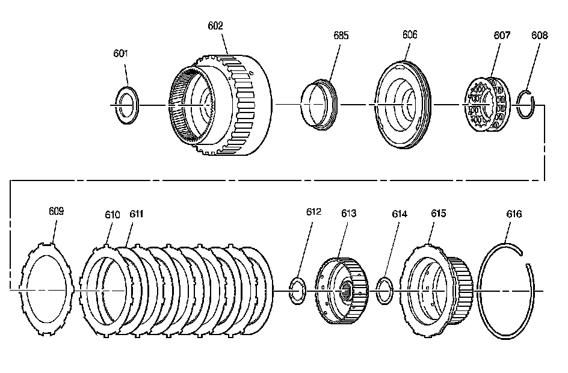
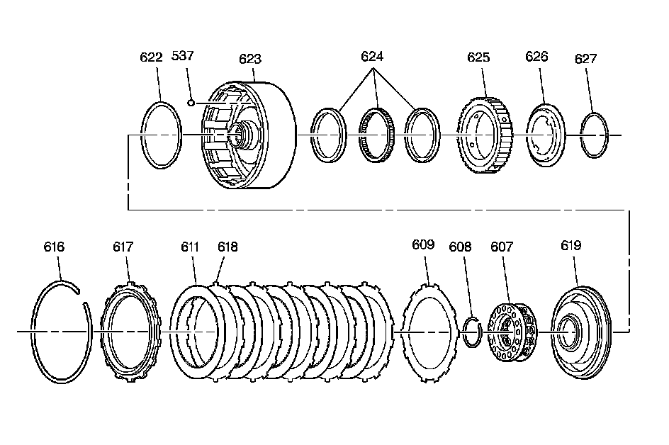
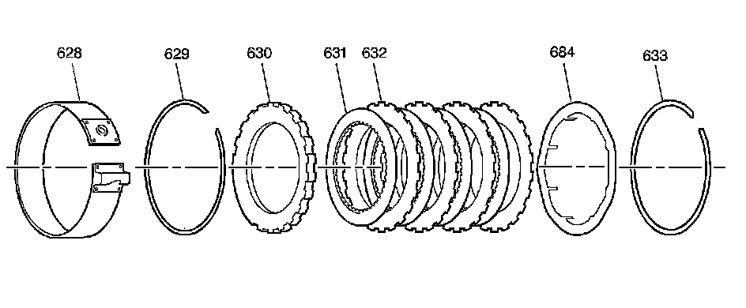

Clutch Assembly
Disassembled Views
Overrun Clutch Assembly:

501 - Turbine Shaft Intermediate Oil Seal Ring
502 - Turbine Shaft
503 - Turbine Shaft Rear Oil Seal Ring
504 - Overrun Clutch Housing Assembly
505 - Overrun Clutch Piston Assembly
506 - Overrun Clutch Spring Assembly
507 - Overrun Clutch Spring Retainer Ring
508 - Overrun Clutch Plate
509 - Overrun Clutch Plate Assembly
510 - Overrun Clutch Backing Plate
511 - Overrun Clutch Backing Plate Retainer Ring
512 - Overdrive Clutch Roller Assembly
513 - Overrun Clutch Housing Bearing Assembly
514 - Overdrive Carrier Assembly
515 - Overdrive Carrier Pinion Gear Thrust Washer
515 - Overdrive Carrier Pinion Gear Thrust Washer
516 - Overdrive Carrier Pinion Gear Washer Thrust (Steel)
516 - Overdrive Carrier Pinion Gear Washer Thrust (Steel)
517 - Overdrive Carrier Pinion Gear Roller Bearing
518 - Overdrive Carrier Pinion Gear
519 - Overdrive Carrier Pinion Gear Pin
520 - Overdrive Carrier Pinion Gear Pin Retainer
521 - Overdrive Carrier Pinion Gear Pin Retainer Retaining Ring
522 - Overdrive Carrier Retainer Ring
534 - Turbine Shaft Plug
537 - Direct Clutch Housing Ball Check Valve
Fourth Clutch Assembly:

523 - 4th Clutch Backing Plate Retainer Ring
524 - 4th Clutch Backing Plate
525 - 4th Clutch Plate Assembly
526 - 4th Clutch Plate
527 - 4th Clutch Piston Inner Seal
528 - 4th Clutch Piston
529 - 4th Clutch Housing
530 - 4th Clutch Orifice
531 - 4th Clutch Piston Outer Seal
532 - 4th Clutch Spring Assembly
533 - 4th Clutch Spring Retainer Ring
Forward Clutch Assembly:

601 - Overdrive Carrier/Forward Clutch Thrust Bearing Assembly
602 - Forward Clutch Housing Assembly
606 - Forward Clutch Piston Assembly
607 - Forward Clutch Spring Assembly
608 - Forward Clutch Spring Retainer Ring
609 - Forward Clutch (Waved) Plate
610 - Forward Clutch Plate
611 - Forward Clutch Plate Assembly
612 - Forward Clutch Housing Thrust Washer
613 - Forward Clutch Hub
614 - Direct Clutch Housing Thrust Washer
615 - Direct Clutch Hub
616 - Direct Clutch Hub Retainer Ring
685 - Forward Clutch Piston Intermediate Seal Assembly
Direct Clutch and Intermediate Sprag Assembly:

537 - Direct Clutch Housing Ball Check Valve
607 - Direct Clutch Spring Assembly
608 - Direct Clutch Spring Retainer Ring
609 - Direct Clutch (Waved) Plate
611 - Direct Clutch Plate Assembly
616 - Direct Clutch Backing Plate Retaining Ring
617 - Direct Clutch Backing Plate
618 - Direct Clutch Plate
619 - Direct Clutch Piston Assembly
622 - Direct Clutch Piston Intermediate Seal
623 - Direct Clutch Housing Assembly
624 - Intermediate Clutch Sprag Assembly
625 - Intermediate Clutch Roller Race (Outer)
626 - Intermediate Clutch Roller Retainer
627 - Intermediate Clutch Roller Retainer Retaining Ring
Intermediate Clutch Plates and Manual 2-1 Band Assembly:

628 - Manual 2-1 Band Assembly
629 - Intermediate Clutch Backing Plate Retainer Ring
630 - Intermediate Clutch Backing Plate
631 - Intermediate Clutch Plate Assembly
632 - Intermediate Clutch Plate
633 - Center Support Retaining Ring
684 - Intermediate Clutch Plate (Waved)